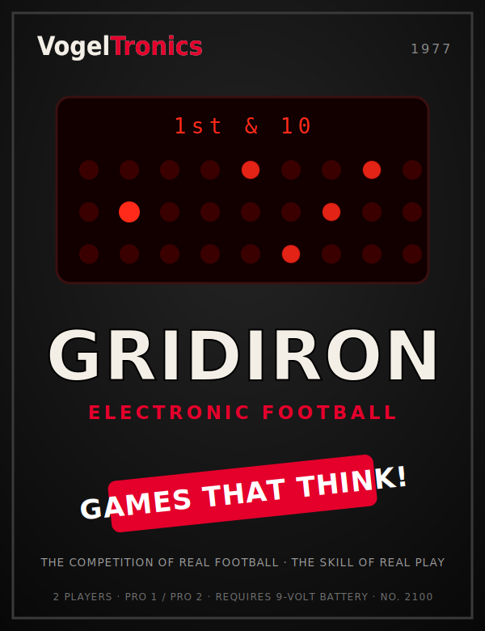

ELECTRONIC FOOTBALL

INSTRUCTIONS
NO. 2100 · 2 PLAYERS · 9-VOLT BATTERY
VogelTronics · Elk Grove Village, Illinois
If the blips are faint or the tone is weak, the battery is low. Fit a fresh one. Remove the battery whenever the game will be stored for a month or more.
2
| Key | What it does |
|---|---|
| ◄▶ | Advances your ball carrier one yard toward your opponent's goal. One press, one yard. |
| ▲ ▼ | Shifts your ball carrier one lane up or down. A shift costs you no yardage. |
| ST | Status. Shows the down, your field position, and the yards needed for a first down. Also sets the field for the next play. |
| SC | Score. Shows the score and the time left in the quarter. Also sets the field for the next play. |
| K | Kick. Accepted on fourth down only. |
| OFF / PRO 1 / PRO 2 | Power and skill. PRO 2 defenders react half again as fast as PRO 1. |
The defense holds still until you commit. Your first press of ◄▶, ▲ or ▼ starts the clock and starts the rush. Until then you may study the formation as long as you like.
After every play, press ST or SC. The game will not set the next play until you do.
3
The playing field is three lanes deep and nine yards long. Your ball carrier is the bright blip. The five dim blips are the defensive tacklers.
Press ST and three numbers appear: the down, your field position, and the yards to go.
Field position is shown with a small upright mark standing for the 50-yard line, and the number sits on the side of that mark where the ball lies. 42⊣ is your own 42. ⊢42 is your opponent's 42. At the 50 itself, no mark appears.
Inside your opponent's 10-yard line the yards-to-go window goes dark. You have goal to go, and the goal line is the only marker that counts.
Press SC for the score and the time left in the quarter. Time is shown in tenths of a minute: 7.5 is seven and one half minutes. At the end of a quarter the window reads 0.0.
4
Gridiron is played by two, one on offense and one on defense, over four quarters of fifteen minutes. The clock runs only while a play is live.
You have four downs to gain ten yards. Gain them and you receive a fresh first down. Fail on fourth down and the ball is lost where it lies: two whistles sound.
The field is one hundred yards long, but only nine are lit at once. Run past the ninth yard and the game returns your carrier to the left of the display and the field advances nine yards beneath him. Fresh tacklers will be waiting.
Field position, down and yards to go carry across the breaks into the second and fourth quarters. At the half, possession changes and the second half opens first and ten on the new offense's own 20.
5
Carry the ball across your opponent's goal line and you score seven points. The bugle sounds. The other side then takes the ball, first and ten, on his own 20.
On fourth down, and on fourth down only, you may press K instead of running. The game measures the kick — anywhere from one to sixty-five yards — and decides what it was.
The nearer you stand to the goal, the likelier the kick will reach it. From beyond sixty-five yards no kick will ever carry that far, and every attempt from there is a punt.
Following a field goal the receiving side takes the ball first and ten on his own 20-yard line.
6
One tackler always plays well back. He is the last man between your carrier and the goal, and he is patient. Beating the front four means nothing if you run straight into him.
Tacklers pursue the lane you are standing in. Work toward one sideline until they commit to it, then shift back across. The lane you left will be emptier than the one you are in.
A tackler will bring you down from behind or from the side just as readily as from in front. Running straight ahead as fast as the key will accept presses will not save you; it will only carry you into someone.
The clock runs only while the ball is live, so a drive that ends in nothing has still cost you time you cannot get back. On fourth down, weigh three points that are likely against seven that are not.
7
Your Gridiron is a precision electronic instrument. Treated properly it will give many seasons of play.
8
VogelTronics warrants to the original purchaser that this product shall be free of defects in material and workmanship for a period of ninety (90) days from the date of purchase, under normal household use. For the purposes of this warranty, "normal household use" shall mean use of a normal kind, in a household.
Should the product prove defective within that period, VogelTronics will at its option repair or replace it without charge for parts or labour. Return the complete product, postage prepaid and insured, with proof of the date of purchase and a brief note describing the fault, to:
VOGELTRONICS SERVICE DEPARTMENT
DEPT. 2100
855 BITTERSWEET LANE
ELK GROVE VILLAGE, ILLINOIS 60007
This warranty does not cover the battery, nor damage resulting from misuse, accident, immersion, unreasonable use, burial, or service or modification by anyone other than VogelTronics. It does not cover products purchased second-hand. This warranty is void if the serial plate has been removed, defaced, or improved.
Enclose the product only. The Service Department cannot return photographs, keys, or correspondence not pertaining to the fault, and does not keep them.
Any implied warranties arising out of the sale of this product, including the implied warranties of merchantability and fitness for a particular purpose, are limited to the ninety-day period described above. VogelTronics shall not be liable for loss of use or any incidental or consequential damages.
Some states do not allow limitations on how long an implied warranty lasts, nor the exclusion of incidental or consequential damages, so the limitations above may not apply to you. This warranty gives you specific legal rights, and you may have other rights which vary from state to state.
Service after the warranty period. Write to the department above for a service estimate before returning any product. Do not send payment with your inquiry.
Games beyond repair. A game found to be beyond repair is not returned. VogelTronics will write to you.
9
Everything the original does — and now THE FORWARD PASS. Two receivers downfield and a ball in the air. Coming for the new season.
The talking sentry. Hear it call out its orders in a voice of its own. Requires 4 "C" cells.
Nine lanes of night driving, and traffic that never once does what you expect.
Nine innings in the palm of your hand. Two players. It fields, it throws, and it does not forgive a slow runner.
Keeps the count. Learns the sound of your name in about a week. One 9-volt battery. Not sold in Ohio.
Should your Gridiron begin a game when no one has touched it, this is normal. Allow it to finish.
VOGELTRONICS · ELK GROVE VILLAGE, ILLINOIS
GAMES THAT THINK!
Printed in U.S.A. · Form 2100-INS-77 · Specifications subject to change without notice. VogelTronics is a fictional company; this booklet is an original work of homage.